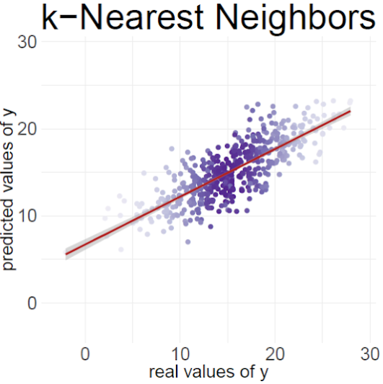

Public Health in a World
Where We Can Predict Anything
Talking Public Health, WashU School of Public Health
April 1, 2026
A a link to these slides
If you would like to follow along on your own device


Why is this happening now?
For example: simultaneous revolutions in computing and biology


Neighborhood characteristics from street view images…

“We show that socioeconomic attributes such as income, race, education, and voting patterns can be inferred from cars detected in Google Street View images using deep learning.”
Malnutrition risk from remotely sensed and field data…

“We combine supervised machine learning methods and remotely sensed feature sets with time series child anthropometric data … to generate accurate forecasts of acute malnutrition at operationally meaningful time horizons.”
Poverty from satellite images of nighttime lights…

“With a bit of machine-learning wizardry, the combined images can be converted into accurate estimates of household consumption and assets, both of which are hard to measure in poorer countries.”
Influenza activity from search/query behavior…

“Here we present a method of analysing large numbers of Google search queries to track influenza-like illness in a population.”
The first IPD approach: Post-Prediction Inference (Wang et al., 2020)
The authors made key observation that the predicted and true outcomes often have a simple relationship


And that predicted and true outcomes often have this simple relationship
Regardless of the predictive model used

Source: https://www.pnas.org/doi/abs/10.1073/pnas.2001238117
We developed a method that generalizes PostPI
Our approach relaxes several assumptions from the original method


Less than 1/3 of deaths worldwide are assigned a medically certified cause
Verbal autopsy (VA) methods convert interviews with family members/caregivers into predicted causes of death
This is a time-consuming, resource-intensive process that asks interviewees to relive their grief in emotionally taxing detail

Source: https://publichealthnotes.com/verbal-autopsy-and-mpdsr/
Recent work leverages unstructured interviews for automated VA
Narrative summaries + AI/ML predictions would be less resource intensive than current standard

Source: https://journals.plos.org/plosone/article?id=10.1371/journal.pone.0308452/
We studied how different AI/ML methods classify cause of death
Comparing methods such as KNN, SVM, BERT, and GPT-4

Source: https://openreview.net/forum?id=QbCHlIqbDJ
Population Health Metrics Research Consortium
N = 6,763 observations from 6 sites in 4 countries; adults only, 5 cause of death labels

Source: https://openreview.net/forum?id=QbCHlIqbDJ
But ‘predictions’ don’t have to be complex to bias inference
The case of body mass index (BMI; kg/m\(^2\)) as an imperfect measure of adiposity

Source: https://www.nytimes.com/2024/11/14/well/obesity-epidemic-america.html
An ‘algorithm’ is just a set of steps that map inputs to outputs
BMI is one of several potential adiposity ‘prediction algorithms’
- BMI (≥ 30 kg/m²)
- Waist circumference (men ≥ 102 cm; women ≥ 88 cm)
- DXA % body fat (> 30% men; > 42% women)

Source: https://www.medrxiv.org/content/10.1101/2025.04.01.25325037v1.full.pdf
Thinking of AI as an epidemiologic exposure
AI systems themselves can act as exposures.
They influence:
- Access to health information
- Public policy and personal decision-making
- Recommendations on public health interventions
Understanding these impacts requires careful measurement and inference.

Some Acknowledgements
This slide is by no means exhaustive
It represents individuals who have contributed most recently to the papers I have highlighted in this talk.